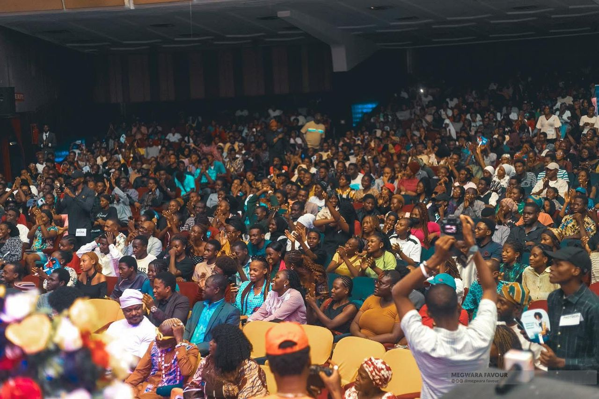
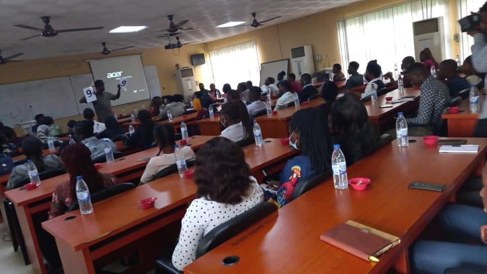
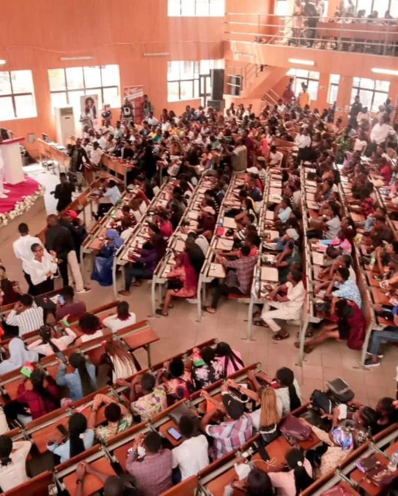
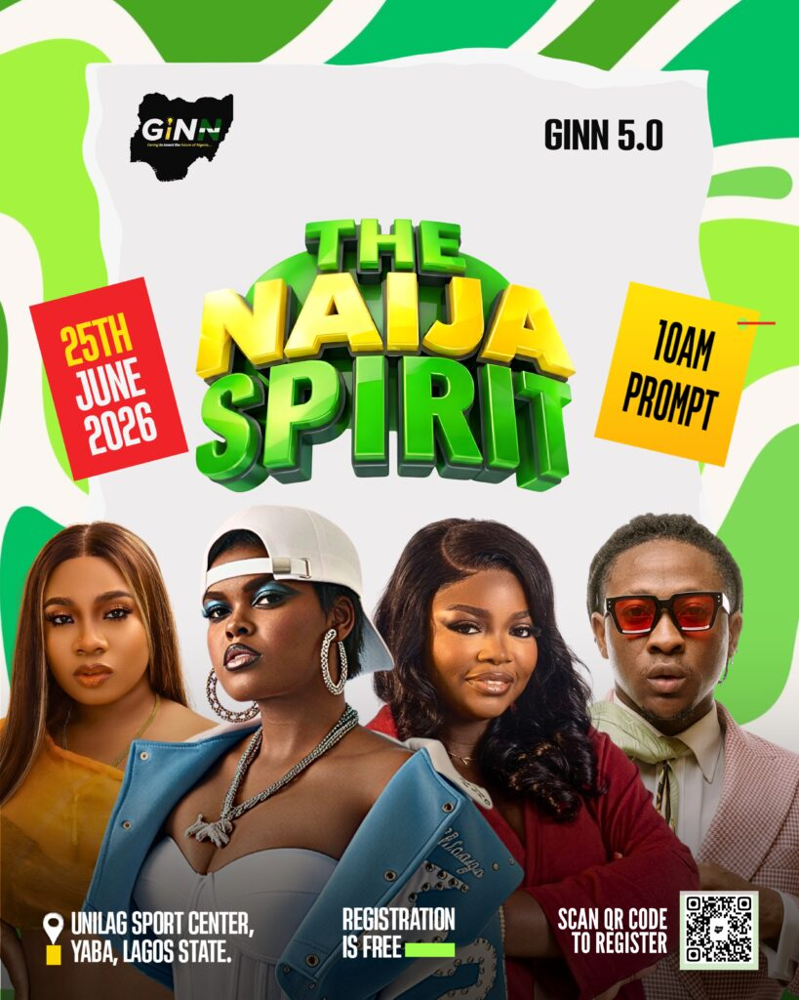

A Movement Growing Across Nigeria
10,000+
Youth Engaged
5
Major Editions
100+
Speakers & Mentors
20+
Cities Reached
ABOUT
GiNN (Gen Z Involvement in a New Nigeria)



GiNN (Gen Z Involvement in a New Nigeria)
GiNN (Gen Z Involvement in a New Nigeria) is a youth-driven movement focused on leadership, innovation, civic awareness, and nation-building. It exists to inspire young Nigerians to move from conversation to action.
Founded on the belief that Nigeria’s greatest asset is its
youth, GiNN exists to mobilize, educate, connect, and empower
Gen Z Nigerians to actively participate in shaping a
progressive, inclusive, and prosperous nation.
We believe the future of Nigeria will be shaped by the decisions
of its youth today.
UPCOMING EVENT

GiNN 5.0 : The Nigeria Dream
GiNN 5.0 brings together young leaders, innovators, creators, and thinkers to discuss the future of Nigeria and the role of Gen Z in shaping it.
Date: 25TH JUNE 2026
Time: 10AM PROMPT
Location: Unilag sports center yaba Lagos, Nigeria.
Theme: The Nigeria Spirit
Meet the Founder
Saint Agomeze
Agomeze Saint Chukwuemeka is a Nigerian entrepreneur, human resource strategist, and youth development practitioner whose work spans enterprise building, workforce development, and social reform.
His career reflects a sustained commitment to aligning economic opportunity with social inclusion, particularly within Nigeria’s large and youthful population.